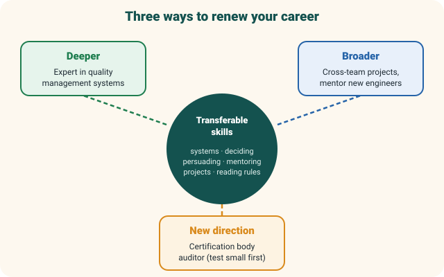

K7 · Self-directed learning and career development › Level 4 Proficient
Review the course: renew your career with a 1–3 year plan
This lesson completes Sheet 8: 1–3 year career plan. Print template. It reuses Tell a STAR example and builds on Prepare your 90-day review (Level 3).
1. Objectives
- List 5 transferable skills, each with evidence from your specialist toolkit.
- Write a 1–3 year career plan: a direction, a small career experiment, 3 measurable milestones.
2. Retrieval warm-up
These questions mix the whole course. Answer without looking, then open the answers.
- What are the three things to look for in a system?
- What are the five steps of a decision sheet?
- How is a position different from an interest?
- What are the four steps for resolving a disagreement?
- What are the four rungs of handover when mentoring?
- Why does a one-page project need an "out of scope" box?
- Which three dates should you record when you read a new regulation?
Answers
- Knock-on effects, loops, delays. (Lesson 1)
- Classify; write assumptions; change-your-mind signals; imagine failure; review date. (Lesson 2)
- A position is what someone demands. An interest is the reason behind it. (Lesson 3)
- Facts; interpretations; shared criteria; test or escalate. (Lesson 4)
- Demonstrate; do together; observe; do alone. (Lesson 5)
- To stop the project from growing. (Lesson 6)
- Signing date; effective date; date the old rule ends. (Lesson 7)
If you got one wrong, redo that lesson before you continue.
3. Explanation
After many years in one job, many people feel they have stalled. Some want to go deeper. Some want to change direction. Both need a plan.
Transferable skills are skills you can use in many jobs. All seven sheets in this course are skills like that. An accountant who can resolve disagreements still uses that skill as a project manager.
Three ways to renew your career:
- Deeper: become a leading expert in your current work.
- Broader: take on nearby work, such as mentoring or cross-team projects.
- New direction: move to another job, taking your skills with you.

Test small before you switch. Do not quit on a burst of enthusiasm. Try the new job on a small scale: a side project, a short course, talking to 3 people who do it. It is a hard-to-reverse decision, so you need data, as in Lesson 2.
Your professional network. People ahead of you know things no book contains. Each quarter, book a conversation with someone in a job that interests you. Prepare specific questions.
Sheet 8. 1–3 year career plan
- 5 transferable skillsEach with a STAR piece of evidence.
- DirectionDeeper, broader or new direction.
- Skills still to learn2 at most, with how you will learn them.
- Small career experimentWhat, for how long, what to measure.
- 3 measurable milestones6 months, 1 year, 3 years.
Review the course with spaced practice: after 1, 3 and 7 days, answer the 7 questions in part 2 again.
4. Workplace example
Hypothetical scenario. Victor has been a quality engineer for 8 years at an electronics factory. His work feels repetitive and he wants to renew his career.
He lists 5 transferable skills, each with evidence. For example: "Systems thinking: an impact map helped cut repeat soldering defects by 30% in 6 months."
He weighs the three directions. New direction: become an auditor for a certification body. He does not know if he would enjoy so much travel. This is a low-confidence assumption.
He designs a 3-month career experiment. Talk to 3 working auditors. Join an internal audit at another factory in the same group. Measure: would he want to do that work 5 days in a row?
6-month milestone: complete an internal auditor course. 1-year milestone: take part in 4 internal audits. 3-year milestone: decide whether to switch for good.
Why this works: each skill has concrete evidence. He tests small before a hard-to-reverse decision. The milestones are measurable and dated.
5. Practice
Hypothetical scenario. You have been a data analyst at a bank for 6 years. You are torn between going deeper into data and moving into product management.
Write 3 transferable skills, each with evidence. Choose a direction. Design a 3-month career experiment and 3 milestones.
Hint 1
Take the evidence from the sheets you made in this course: impact map, decision sheet, one-page proposal.
Hint 2
A small career experiment can happen inside your company: take on part of the product team's work.
Model answer
- Skill 1: persuading. Evidence: a one-page proposal was approved, saving 2 days on the monthly report.
- Skill 2: resolving disagreements. Evidence: mediated between two teams on the definition of an "active customer".
- Skill 3: lean projects. Evidence: led an 8-week data-cleaning project, delivered on time.
- Direction: move into product management.
- 3-month experiment: ask to join the cards product team for 20% of your time. Own the analysis of customer feedback. Measure: do you enjoy interviewing customers and prioritising features?
- Milestones: 6 months: 2 feature proposals accepted by the team. 1 year: own one small feature from start to finish. 3 years: work as a product manager.
(The figures are hypothetical.)
6. Self-check
Choose an answer. Every option has an explanation.
Question 1. You want to change careers but do not know if it will suit you. What is the most sensible step?
-
Not quite. This is a hard-to-reverse decision made without data. The risk is high.
-
Correct. Correct. A small test gives you real data before a big decision.
-
Not quite. Without testing, you never get the information you need to be surer.
Question 2. Which is good evidence of the skill "persuading"?
-
Not quite. This is a self-description with no concrete task or result.
-
Correct. Correct. It has a concrete task, a measured result and a time period.
-
Not quite. This is vague, with no situation or checkable result.
Question 3. Mixed review: a target makes staff end calls early, so customers call back more. What is this?
-
Correct. Correct. The final result feeds back to the start, so the problem grows by itself.
-
Not quite. Staff are doing exactly what the target asks. The problem is in the system design.
-
Not quite. The question is about a chain of effects, not a type of decision.
Question 4. Mixed review: the person you mentor has done a task well on their own many times. What should you do?
-
Not quite. Endless checking slows their progress and costs you time.
-
Correct. Correct. The mentor steps back once the learner can do it.
-
Not quite. Demonstrating is the first rung. Going back does not make them more independent.
Question 5. Mixed review: a new decree has just been signed. What is the first step when updating internal documents?
-
Not quite. The signing date is not the effective date. Updating early may apply it at the wrong time.
-
Correct. Correct. Get the dates right first, then make the task table.
-
Not quite. In a senior role, you are often the one expected to read and update first.
7. Reflection
- Of the seven sheets in this course, which do you use most? Which do you avoid?
- If in 3 years you were still doing exactly today's job, how would you feel?
8. Real-world application
In the next 7 days, complete Sheet 8. Give it to someone you trust to peer-check: is the evidence convincing, are the milestones measurable? Book a conversation with someone in a job that interests you.
9. Metadata
| skill | K7 · Self-directed learning and career development |
|---|---|
| level | Level 4 · Proficient |
| group | N4 |
| framework_map | WEF: Curiosity and lifelong learning; CSfW: 1a Manage career and work life; SkillsFuture CCS: Learning Agility; Adaptability; NACE: Career and Self-Development; LifeComp: L3 Managing learning (reference only) |
| original | Vietnamese version |
| updated | 2026-11-14 |
Finish the lesson
Mark it as done and the site suggests reviews after 1, 3 and 7 days. The data stays on your device only.
Suggested reviews: